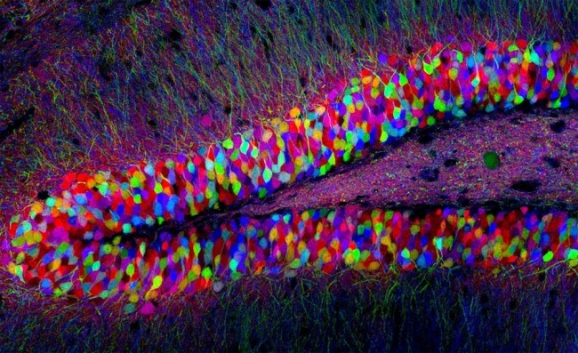
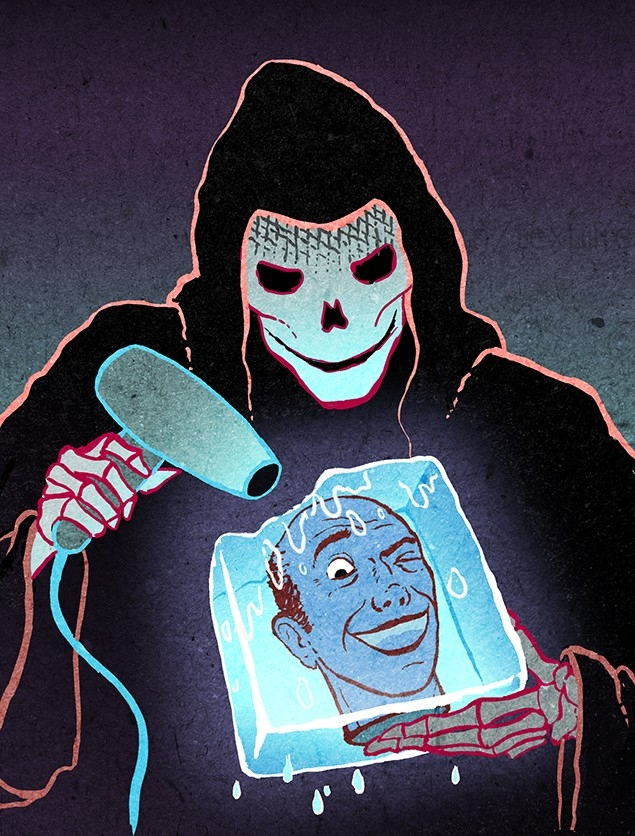
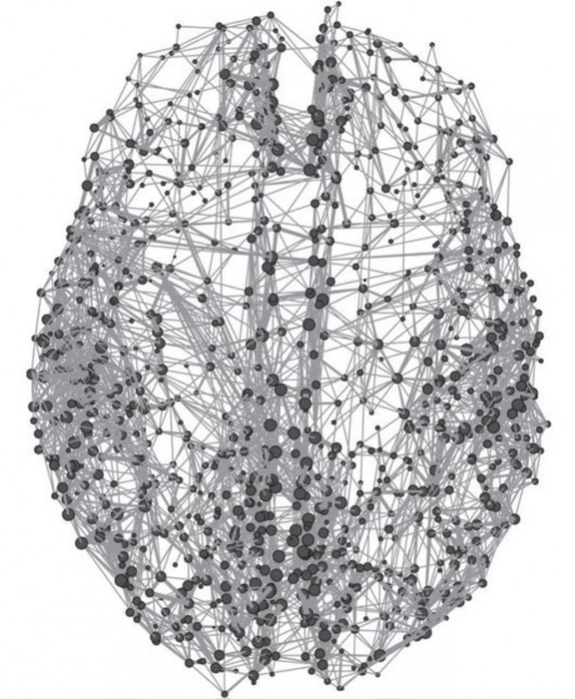
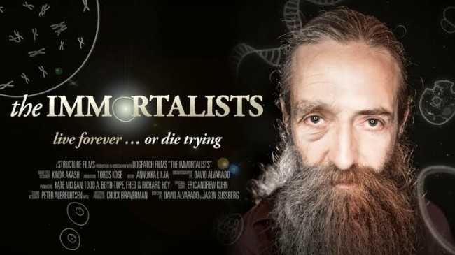

Vous en avez assez de la condition humaine et ras-le-bol du poil dans les oreilles ? Vous ne voyez pas pourquoi votre ego si méritant devrait se dissoudre dans ce grand Rien qu’est le grand Tout ?
Ce mode d’emploi est fait pour vous. Il dissèque les grandes lignes à suivre pour préserver ce fol espoir de vie éternelle. Contre les vents, les marées et la nature toute entière !

Cependant, la vie éternelle est devenue un business qui requiert que vous vous posiez d’emblée une question : combien investir ?
[Entre 1 et 100 euros]
[Entre 100 et 1 000 euros]
Toute ressemblance entre cette table des matières pyramidale et une quelconque hiérarchie sociale serait le résultat du hasard.
Avec 1 euro…
Avec cet euro symbolique, allumez un cierge devant le saint-patron du coin et priez, car comme nous dit Blaise Pascal dans son fameux pari :
« Pesons le gain et la perte, en prenant croix que Dieu est. Estimons ces deux cas : si vous gagnez, vous gagnez tout ; si vous perdez, vous ne perdez rien. Gagez donc qu’il est, sans hésiter. » (« Pensées », 1670.)
Si à propos, arrêtez de fumer, cela devrait vous permettre de financer la suite. Si vous ne souhaitez pas arrêter de fumer, interrogez vos motivations : êtes-vous réellement un candidat sérieux à l’immortalité ?
Sinon, restez zen et tentez d’aider les autres à l’être autour de vous. En l’absence de ressources, ils sont votre meilleur atout de survie : sans groupe social ou dans un groupe social qui va mal, vous risqueriez la dépression ou l’anxiété [PDF], qui ont tendance à être mal supportées lorsqu’elles s’éternisent…
Entre 1 euro et 100 euros
On ne va pas vous mentir : ce pécule reste un peu juste en matière d’immortalité. Comme il parait que l’espoir fait vivre, commencez par mettre 2 euros et une grille Euromillions dans un tiroir.
Investissez ensuite dans une bonne paire de chaussures et mettez-vous au jogging. A doses raisonnables, le sport a en effet de grandes vertus pour un organe dont il s’agit de prendre spécialement soin car, contrairement au foie, au cœur, ou aux poumons, celui-ci sera difficilement remplaçable : le cerveau.

Même si on estime qu’il faudrait environ 3 000 ans pour qu’un cerveau humain perde la moitié de ses neurones, avouez que ce serait ballot de de vivre aussi longtemps qu’Highlander si vous avez Alzeihmer. Ça tombe bien, l’exercice physique est un facteur-clé de la neurogénèse dans l’hippocampe, cette structure cérébrale qui stocke vos souvenirs.
Entre 100 et 1000 euros
Vous avez arrêté de fumer et vous vous êtes mis au sport ? Parmi les autres mesures à prendre en attendant l’élixir de jouvence qui vous octroiera la vie éternelle, prenez garde à votre alimentation. Pas trop d’alcool, de sodas, de gluten, de viande rouge, de poisson… Vous reprendrez bien un petit jus de pissenlit avec vos brocolis ?
Halte-là ! Ce serait trop simple. Car comme notre Elise Lucet nationale l’a montré, l’eau, les fruits, les légumes ou le lait issus de l’agriculture traditionnelle contiennent encore trop de ces maudits pesticides. Vous aurez donc souvent besoin d’un peu plus de monnaie pour manger un peu plus bio. Pénible oui, mais l’association entre ces produits chimiques et certaines maladies comme Parkinson est tellement clair que celle-ci est officiellement considérée comme maladie professionnelle chez les agriculteurs. Il semble même que l’accumulation de pesticides dûe à trop grande consommation de lait (plus de 0.5L/jour) puisse faciliter l’émergence des symptômes qui lui sont associés.
Comparé à celui d’autres substances, l’impact des pesticides est facilement objectivables car les neurones dopaminergiques - auxquels s’attaquent les pesticides - sont une ressource rare et fragile. Largement regroupés dans un petit noyau au milieu du cerveau, ils représentent à la louche moins de 0,5% de tous vos neurones mais ils sont impliqués dans d’innombrables fonctions cognitives : apprentissage, mouvement, prise de décision, humeur, motivation, attention et concentration, pour ne citer que celles- ci.
Par chance, le problème nutritionnel est somme toute assez simple pour nous autres Français : lié en partie à la consommation de vin (rouge), riche en resvératrol, le « french paradox » permet à notre gastronomie d’être plutôt en pointe sur les questions de longévité malgré certaines entorses au règlement. Si vous en avez les moyens, le plaisir de manger bien outrepassera donc facilement le désir de manger beaucoup.
Entre 1 000 et 10 000 euros
Bravo, avec cette somme, vous pouvez vous payer une mutuelle ! Plus de 3 millions de Français n’ont pas cette chance. C’est elle qui remplacera vos dents, lunettes, et autres prothèses auditives dans les siècles et les siècles à venir. Car même si la thérapie génique permettait à vos cellules de se régénèrer à l’infini, même si vous passiez l’éternité dans une chambre stérile à manger des aliments pasteurisés, la bonne vieille érosion physico-chimique continuerait quant à elle à esquinter tous les éléments inertes qui vous composent.
Avec le démantèlement des services de santé publics, votre mutuelle risque également de devoir payer pour votre éventuel cancer, dont l’occurrence sera d’autant plus probable que vous vivrez longtemps. En effet, la cancérisation reste un processus hautement aléatoire qui ne pourra jamais être totalement endigué par la suppression des facteurs de risque externes. C’est contrariant, mais ce risque approchera bel et bien les 100% si vous parveniez à étendre votre longévité de plusieurs siècles (contre 50% pour une vie « normale » de 70 ou 80 ans). Ironie du sort, l’immortalité est une propriété cardinale de nombreuses lignées cancéreuses, dont la plus célèbre d’entre elles : la souche HeLa.
Préservez enfin une partie de ce budget pour les distractions et les loisirs. Dans le cas contraire, votre hypothétique immortalité pourrait se révéler mortellement ennuyeuse. Commencez donc par acheter une paire de Google Glass ! En plus de soutenir ces apôtres de la « mort vaincue » dans leur philanthropique entreprise, l’acquisition de ce bijou de technologie dont vous n’avez pas (encore) besoin pourrait vous aider à surmonter les petits dangers de la vie quotidienne. Autrement dit, ceux que les simples mortels peuvent se permettre de négliger mais qui pourraient en revanche fortement contrarier vos projets d’immortalité : détection automatique de terroristes potentiels dans la rue, calcul de votre niveau de vigilance pour aide à la conduite en temps réel, probabilité d’être frappé par la foudre, etc.
N’oubliez jamais, si le simple mortel peut compenser avec une existence riche d’émotions et de sens, le « manque à gagner » associé à une mort évitable tend vers l’infini pour un aspirant à l’immortalité, comme le nombre d’années qui auront été si bêtement perdues.
Entre 10 000 et 100 000 euros
A ce stade, vous commencerez à profiter de certains services qu’une majorité de vos concitoyens ne pourra s’offrir. Avant de poursuivre dans cette voie, merci de vérifier si vous avez payé vos impôts pour ceux qui ne peuvent pas se payer de mutuelle, car vous ne voudriez pas vivre éternellement avec une irritante meute de « sans-dents » sous vos fenêtres, n’est-ce pas ?
Une fois cette formalité accomplie, filez tout d’abord au Check-up Center de l’hôpital américain de Neuilly-sur-Seine. Vous y débourserez quelques 5 000 euros pour un bilan exhaustif de votre état de santé qui devrait permettre de juguler de nombreuses lésions et maladies à leur stade le plus précoce. Echographie cardiaque, scanner pulmonaire, analyses sanguines extensives, pourcentage de masse graisseuse : l’immortalité est un combat quotidien qui exige que vous appreniez à aimer l’hôpital et les médecins !
De retour chez vous, ouvrez votre navigateur web et allez sur le site d’Illumina, leader mondial du séquençage génétique pour les particuliers. Pour environ 1 000 euros, vous obtiendrez une retranscription complète de votre génome sur DVD. Mais comme il serait parfaitement vain d’examiner ces 3 milliards de lettres A, T, C, G sous Microsoft Word, vous allez devoir recourir aux services d’une gourmande équipe de bioinformaticiens et de généticiens professionnels pour « faire parler » votre identité génétique (par exemple, chez Cyber Genomics). En cas de besoin, leurs résultats pourraient vous permettre de bénéficier plus facilement de thérapies ciblées – c’est-à-dire adaptées à votre identité génétique et à ses fragilités.
Dans un autre registre, on vous recommande enfin d’investir dans une voiture lourde et si possible surélevée. Sur le long terme, le facteur de risque automobile ne doit pas être négligé et aucune biotechnologie n’a encore prouvé son efficacité en matière d’accidents de la route (quatrième facteur de mortalité). Les portefeuilles bien garnis seront donc heureux d’apprendre que les conducteurs de 4x4 et de berlines peuvent diminuer ce risque par deux ou trois, car le poids de leur voiture est un avantage dans de nombreux types de collision..
Bienvenue également, la carrosserie blindée qui contribuera à vous protéger de la criminalité itinérante et des guerres civiles que les inégalités socioéconomiques pourraient favoriser dans les prochaines décennies.
Entre 100 000 et 1 000 000 euros
Désolé, mais le domaine biomédical à proprement parler n’a plus grand-chose à vous proposer. Certes, votre budget conséquent vous permettra éventuellement d’accéder plus facilement à certaines techniques émergentes comme l’hadronthérapie(irradiation radiologique extrêmement précise), aux organes de rechange (disponibles sur le marché noir), ainsi qu’aux bioprothèses les plus évoluées – comme ce cœur artificiel conçu par Carmat. Cocorico. Mais c’est surtout ici que le fantasme de l’immortalité s’épaissit d’un sérieux peu catholique.
Avec un tel budget, soyez certains que les entreprises de cryogénisation comme Alcor ou Cryonics vous ouvriront leurs bras en grand pour prévoir une mise au congélo (-196°C) qui interviendra juste après votre vrai-faux « trépas ». Certes, elles sont toutes les deux très en marge de la science contemporaine, mais seul Cryonics n’impose ni delai post-mortem maximum, ni traitement antigel préalable. Inutile de dire qu’à votre réveil, Lilianne de Bettencourt risquerait vous distancer avec aisance, aussi bien à la course et qu’au sudoku. Du coup, si vous êtes un peu juste pour une cryogénization complète chez Alcor (200 000 dollars), vous aurez donc un dilemme cornélien à trancher (sic) entre « l’option tête » d’Alcor (on parle alors de neurocryogénisation : 80 000 dollars) et « l’option corps entier » chez Cryonics. A vous de voir si l’immortalité sans organes sexuels vous branche.

De nombreuses personnes ont déjà entendu parler de la cryogénisation sans bien savoir ce que l’on peut en attendre exactement. Et pour cause : personne ne sait vraiment. Ces sociétés préviennent d’ailleurs que l’espoir à placer dans les techniques de cryogénisation est entièrement dépendant de recherches futures dont nous peinons encore à imaginer les contours. Deux « solutions » aussi improbables l’une que l’autre se profilent à l’horizon…
Premièrement, vous pouvez espérer l’apparition de ces nanorobots ultraperfectionnés qui seront nécessaires pour réparer les dommages que la congélation aura fait subir à vos tissus. Mais pour être honnête avec vous, le résultat risque de ne pas être fameux. Comme le corps des mammifères évolue depuis 220 millions d’années dans une fourchette de températures allant au maximum de 25 à 45°C, il y a fort peu de chances pour qu’un corps entier ressorte un jour intact d’une congélation (ce n’est qu’un avis), fut-elle effectuée de manière optimale et maintenue sous les -150°C.
La deuxième solution est sans doute plus réaliste, mais supposent que la conscience et l’esprit soient deux phénomènes purement mécaniques. En effet, certains chercheurs travaillant dans le domaine de la « connectomique » ont récemment proposé que notre esprit se réduirait à la manière dont nos milliards de neurones sont connectés en eux. Sous cette hypothèse, les progrès rapides de l’imagerie par résonance magnétique laissent espérer la possible extraction (à partir, par exemple, d’une tête congelée) de l’information contenue dans ces « schémas de câblage » neuronaux qui constitueraient notre identité mentale. Les partisans de la cryogénisation soutiennent ainsi qu’un ordinateur pourrait « héberger » un connectome fonctionnel, à la manière dont les serveurs accueillent aujourd’hui les sites internet.

Votre enthousiasme naissant doit cependant être ici doublement nuancé. D’une part, ces schémas seront nécessairement extraits avec un certain degré d’incertitude. A votre réveil, vous pourriez ne plus être bien sûr : votre mère se prénomme-t-elle Marianne ou Marine ? D’autre part, comme les neurones ne sont pas des transistors inertes mais des unités fonctionnelles qui se modifient perpétuellement suivant des lois très complexes et propres à chacun, il faudrait que ce super-ordinateur accueille non seulement votre connectome mais qu’il retranscrive aussi ces innombrables paramètres avec une grande fidélité. Sinon, vous risqueriez d’être vous-même au réveil et « quelque chose » d’autre une semaine plus tard.
Entre 1 000 000 et 1 000 000 000 euros
En bon millionnaire que vous êtes, vous ne savez plus quoi faire de votre capital et vous voudriez l’investir dans un secteur rémunérateur à long terme ? Dans ce cas, sachez que l’immortalité est un domaine où la notion de long-terme prend tout son sens !
Certes vos investissements auront peu de chances de vous offrir l’immortalité à titre personnel, mais si vous inculquez le culte du capital et de la reproduction sociale à vos enfants et petits-enfants, il est possible que ceux-ci bénéficient de votre perspicacité. Mais où investir ? Entre nous, le business model des cryogéniseurs n’est pas très prometteur. Optez plutôt pour la lutte contre le vieillissement.
Parmi les compagnies qui s’intéresseront le plus à votre argent, vous trouverez évidemment l’intenable Google et son laboratoire Calico. Avec le recrutement du controversé Ray Kurzweil prophétisant l’avènement prochain d’une « singularité technologique » (rupture soudaine dans l’histoire de l’humanité due à la technologie), Google est en effet devenu une entreprise ouvertement « transhumaniste ». Visant aussi bien l’éradication de la vieillesse que le développement de la robotique ou encore l’essor d’intelligences artificielles supérieures à l’esprit humain, cette multinationale réussira sans doute quelques prouesse en matière de lutte contre le vieillissement dans les décennies à venir.
Mais si vous préférez les entreprises plus familiales, vous pouvez aussi opter pour une donation à Sens.org fondée par Aubrey de Grey. Ce Sébastien Tellier de l’immortalité cristallise de nombreux espoirs depuis la sortie de son docu-publicité « The Immortalists ». Avec les fonds qu’il tente de collecter ici et là, Aubrey de Grey poursuit ainsi plusieurs pistes scientifiques relativement sérieuses. Parmi celles-ci, de Grey cherche à contrôler ou à inverser la dégénérescence des « télomères », ces séquences d’ADN situées à l’extrémité des chromosomes et qui font office de protection naturelle contre la dégradation de votre patrimoine génétique.

On soupçonne en effet que le vieillissement soit largement dû à la disparition progressive de ces séquences au cours de la vie, et certaines études chez la souris indiquent qu’en reconstruisant artificiellement ou en empêchant la disparition des télomères, il serait possible de ralentir significativement le vieillissement, voire même de l’inverser ! Pour l’instant, ce type d’intervention a aussi tendance à créer des tumeurs et autres instabilités métaboliques, mais une longévité de 200 ans requerra sans doute un traitement de ce type.
Si vous êtes prêts à prendre tous les risques pour endiguer votre propre vieillissement, alors je vous recommande de mettre vraiment le paquet chez Aubrey de Grey ou dans une autre fondation privée du même genre. Leur reconnaissance pourrait vous ouvrir les portes de certaines armoires à pharmacie et vous donner accès à la rapamycine qui est la première molécule reconnue efficace pour allonger de quelques pourcents l’espérance de vie des mammifères (au prix de quelques effets secondaires déjà constatés chez les souris, comme la dégénération testiculaire ou la cataracte).
Malheureusement (ou pas), le business de l’immortalité n’a pas encore vraiment décollé en France et l’accès à ces substances expérimentales posera ici plus de problèmes. Vous pourriez donc opter pour une approche plus indirecte si vous voulez investir dans l’immortalité bleu-blanc-rouge. Parmi les solutions possibles, le don déduit d’impôts au CNRS, à l’Inserm, à la FRM ou encore à des organismes philanthropiques comme la Fondation de France. Ces institutions promeuvent elles aussi des recherches scientifiques sérieuses sur le vieillissement, bien que leurs retombées ne soient pas a priori réservées aux quelques « happy fews » dont vous faites partie.
Gradients socioéconomiques, gradients de santé
Alors que notre bienveillant gouvernement s’apprête à mettre quelques coups de latte supplémentaires dans le code du travail, les inégalités socioéconomiques continuent de se retranscrire dans les esprits, les corps et les taux de mortalité [PDF]. Sans compter toutes les chemises à col blanc qui en pâtissent.
Les épidémiologistes et les éthiciens déplorent depuis de nombreuses années la lenteur de la France en matière de prévention et ils regrettent que l’Insee limite la publication les données démographiques les plus utiles pour évaluer le phénomène. Alors qu’elle commence à se résorber dans de nombreux pays européens, la corrélation entre hiérarchie sociale et santé tend à s’aggraver en France, de sorte que le taux de mortalité des ouvriers y est 2,5 fois supérieur à celui des cadres [p31-p32, ce PDF].
Le Haut Conseil de la santé publique le rappelle régulièrement, sans grand effet.
Merci à Antoine Doré pour ces illustrations mettant en scène la mort aux prises avec l’heureux bénéficiaire d’une neurocryogénisation.